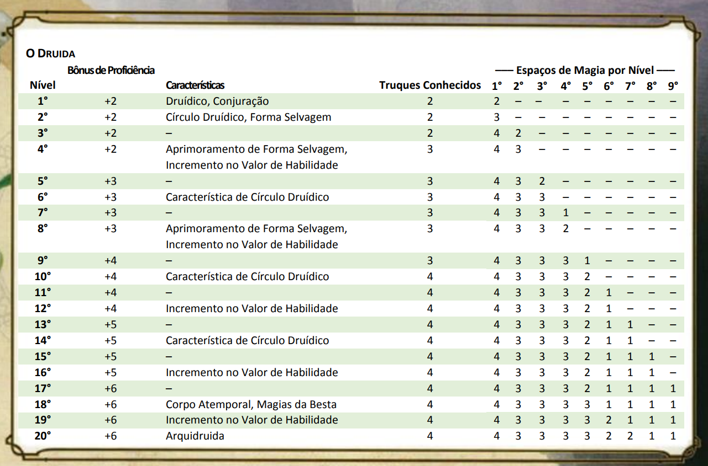

CARACTERiSTICAS DE CLASSE
Como um druida, você adquire as seguintes características de classe.
Dado de Vida: 1d8 por nível de druida
Pontos de Vida no 1° Nível: 8 + seu modificador de Constituição
Pontos de Vida nos Níveis Seguintes: 1d8 (ou 5) + seu modificador de Constituição por nível de druida após o 1°
Armaduras: Armaduras leves, armaduras médias, escudos (druidas não irão vestir armaduras ou usar escudos feitos de metal)
Armas: Clavas, adagas, dardos, azagaias, maças, bordões, cimitarras, foices, fundas e lanças.
Ferramentas: Kit de herbalismo
Testes de Resistência: Inteligência, Sabedoria
Perícias: Escolha duas dentre Arcanismo, Adestrar Animais, Intuição, Medicina, Natureza, Percepção, Religião e Sobrevivência
- (a) um escudo de madeira ou (b) qualquer arma simples
- (a) uma cimitarra ou (b) qualquer arma corpo-a-corpo simples
- (a) um pacote de estudioso ou (b) um pacote de explorador
Armadura de couro, um pacote de aventureiro e um foco druídico
Você e outros que conheçam esse idioma automaticamente veem tais mensagens. Outros perceberão a presença da mensagem se passarem num teste de Sabedoria (Percepção) CD 15, mas não conseguirão decifrá-lo sem magia.
Veja o capítulo 10 para as regras gerais de conjuração e o capítulo 11 para a lista de magias de druida.
Você recupera todos os espaços gastos quando termina um descanso longo.
Você prepara a lista de magias disponíveis selecionando-as da lista de magias de Druida. Você seleciona um número de magias igual ao seu modificador de Sabedoria + seu nível de druida (mínimo de uma magia).
Essas magias devem ser de níveis que você possua espaços de magia. Por exemplo, se você é um druida de 3º nível, você possui quatro espaços de magia de 1º nível e dois de 2º nível.
Com Sabedoria 16, sua lista de magias preparadas pode incluir 6 magias, combinando as de 1º e 2º nível em qualquer ordem. Se você preparar a magia de 1º nível curar ferimentos, você pode conjurá-la com um espaço de magia de 1º ou de 2º nível.
Ao conjurar a magia, você não a retira de sua lista de magias preparadas, podendo conjurá-la de novo se tiver espaços de magia disponíveis.
Você pode modificar a sua lista de magias preparadas quando termina um descanso longo. Preparar uma nova lista de magias de druida requer tempo gasto em preces e meditação: no mínimo 1 minuto por nível de magia para cada magia preparada.
Você usa sua Sabedoria sempre que alguma magia se referir a sua habilidade de conjurar magias. Além disso, você usa o seu modificador de Sabedoria para definir a CD dos testes de resistência para as magias de druida que você conjura e quando você realiza uma jogada de ataque com uma magia.
CD para suas magias = 8 + bônus de proficiência + seu modificador de Sabedoria
Modificador de ataque de magia = seu bônus de proficiência + seu modificador de SabedoriaFORMA SELVAGEM
A partir do 2° nível, você pode usar sua ação para assumir magicamente a forma de uma besta que você
já
tenha visto antes. Você pode usar essa característica duas vezes. Você recupera os usos quando
termina
um descanso curto ou longo.
PONTOS DE VIDA
Dado de Vida: 1d8 por nível de druida
Pontos de Vida no 1° Nível: 8 + seu modificador de Constituição
Pontos de Vida nos Níveis Seguintes: 1d8 (ou 5) + seu modificador de Constituição por nível de druida após o 1°
PROFICIÊNCIAS
Armaduras: Armaduras leves, armaduras médias, escudos (druidas não irão vestir armaduras ou usar escudos feitos de metal)
Armas: Clavas, adagas, dardos, azagaias, maças, bordões, cimitarras, foices, fundas e lanças.
Ferramentas: Kit de herbalismo
Testes de Resistência: Inteligência, Sabedoria
Perícias: Escolha duas dentre Arcanismo, Adestrar Animais, Intuição, Medicina, Natureza, Percepção, Religião e Sobrevivência
EQUIPAMENTO
Você começa com o seguinte equipamento, além do equipamento concedido pelo seu antecedente:- (a) um escudo de madeira ou (b) qualquer arma simples
- (a) uma cimitarra ou (b) qualquer arma corpo-a-corpo simples
- (a) um pacote de estudioso ou (b) um pacote de explorador
Armadura de couro, um pacote de aventureiro e um foco druídico
DRUÍDICO
Você conhece o Druídico, o idioma secreto dos druidas. Você pode falar esse idioma e usá-lo para deixar mensagens escondidas.Você e outros que conheçam esse idioma automaticamente veem tais mensagens. Outros perceberão a presença da mensagem se passarem num teste de Sabedoria (Percepção) CD 15, mas não conseguirão decifrá-lo sem magia.
CONJURAÇÃO
Baseado na essência divina da própria natureza, você pode conjurar magias para moldar sua essência a sua vontade.Veja o capítulo 10 para as regras gerais de conjuração e o capítulo 11 para a lista de magias de druida.
TRUQUES
Você conhece dois truques, à sua escolha, da lista de magias de druida. Você aprende truques de druida adicionais, à sua escolha, em níveis mais altos, como mostrado na coluna Truques Conhecidos da tabela O Druida.PREPARANDO E CONJURANDO MAGIAS
A tabela O Druida mostra quantos espaços de magia você têm para conjurar suas magias de 1º nível e superiores. Para conjurar uma dessas magias, você precisa gastar um espaço do nível da magia ou superior.Você recupera todos os espaços gastos quando termina um descanso longo.
Você prepara a lista de magias disponíveis selecionando-as da lista de magias de Druida. Você seleciona um número de magias igual ao seu modificador de Sabedoria + seu nível de druida (mínimo de uma magia).
Essas magias devem ser de níveis que você possua espaços de magia. Por exemplo, se você é um druida de 3º nível, você possui quatro espaços de magia de 1º nível e dois de 2º nível.
Com Sabedoria 16, sua lista de magias preparadas pode incluir 6 magias, combinando as de 1º e 2º nível em qualquer ordem. Se você preparar a magia de 1º nível curar ferimentos, você pode conjurá-la com um espaço de magia de 1º ou de 2º nível.
Ao conjurar a magia, você não a retira de sua lista de magias preparadas, podendo conjurá-la de novo se tiver espaços de magia disponíveis.
Você pode modificar a sua lista de magias preparadas quando termina um descanso longo. Preparar uma nova lista de magias de druida requer tempo gasto em preces e meditação: no mínimo 1 minuto por nível de magia para cada magia preparada.
HABILIDADE DE CONJURAÇÃO
Sabedoria é a sua habilidade para você conjurar suas magias de druida, já que sua magia vem da sua devoção e sintonia com a natureza.Você usa sua Sabedoria sempre que alguma magia se referir a sua habilidade de conjurar magias. Além disso, você usa o seu modificador de Sabedoria para definir a CD dos testes de resistência para as magias de druida que você conjura e quando você realiza uma jogada de ataque com uma magia.
CD para suas magias = 8 + bônus de proficiência + seu modificador de Sabedoria
Modificador de ataque de magia = seu bônus de proficiência + seu modificador de Sabedoria
CONJURAÇÃO DE RITUAL
Você pode conjurar qualquer magia de druida que você conheça como um ritual se ela possuir o descritor ritual.FOCO DE CONJURAÇÃO
Você pode usar um foco druídico (encontrado no capítulo 5) como foco de conjuração das suas magias de druida.FORMA SELVAGEM
A partir do 2° nível, você pode usar sua ação para assumir magicamente a forma de uma besta que você
já
tenha visto antes. Você pode usar essa característica duas vezes. Você recupera os usos quando
termina
um descanso curto ou longo.
Seu nível de druida determina as bestas em que você pode se transformar, como mostrado na tabela
Formas
de Besta. No 2° nível, por exemplo, você pode se transformar em qualquer besta que possui nível de
desafio 1/4 ou inferior que não possua deslocamento de voo ou natação.
FORMAS DE BESTA

Você pode continuar na forma de besta por um número de horas igual à metade do seu nível de druida
(arredondado para baixo).
Então, você volta a sua forma original, a não ser que você gaste outro uso
dessa característica. Você pode reverter a sua forma normal prematuramente usando uma ação bônus no
seu
turno.
Você reverte automaticamente se cair inconsciente, cair a 0 pontos de vida ou morrer.
Enquanto estiver transformado, as seguintes regras se aplicam:
- Suas estatísticas de jogo são substituídas pelas estatísticas da besta, mas você mantem sua
tendência,
personalidade e valores de Inteligência, Sabedoria e Carisma. Você também mantem suas proficiências
em
todas as suas perícias e testes de resistência, além de receber as proficiências da criatura. Se a
criatura possuir a mesma proficiência que você e o bônus no bloco de estatística dela for maior que
o
seu, você usará o bônus da criatura no lugar do seu. Se a criatura possuir qualquer ação lendária ou
de
covil, você não pode usá-las.
- Quando você se transforma, você assume os pontos de vida e Dados de Vida da criatura. Quando
você
reverte a sua forma normal, você retorna ao número de pontos de vida que tinha antes de se
transformar.
Porém, se você reverter como resultado de ter caído a 0 pontos de vida, todo o dano excedente
será
transferido para a sua forma normal. Por exemplo, se você sofrer 10 pontos de dano em forma animal e
tiver apenas 1 ponto de vida restante, você reverte e sofre 9 de dano. Contanto que o dano excedente
não
reduza você a 0 pontos de vida, você não cairá inconsciente.
- Você não pode conjurar magias e sua capacidade de fala ou de realizar qualquer ação que
requeira
mãos
são limitadas pelas capacidades da forma da besta que você assumiu. Transformar-se não interrompe
sua
concentração em uma magia que você já tenha conjurado, no entanto, nem previne você de realizar
ações
que são parte da conjuração, como convocar relâmpagos que você já tenha conjurado.
- Você mantem os benefícios de todas as características de classe, raça ou outras fontes, e pode
usá-las
caso a nova forma seja fisicamente capaz de fazê-lo. No entanto, você não pode usar qualquer dos
seus
sentidos especiais, como visão no escuro, a não ser que a sua nova forma também tenha esse sentido.
- Você pode escolher se o seu equipamento cai no chão no seu espaço, é assimilado a sua nova
forma ou
é
usado por ela. Equipamentos vestidos e carregados funcionam normalmente, mas o Mestre decide qual
equipamento é viável para a nova forma vestir ou usar, baseado na forma e tamanho da criatura.
O seu
equipamento não muda de forma ou tamanho para se adaptar à nova forma e, qualquer equipamento que a
nova
forma não possa vestir deve, ou cair no chão ou ser assimilado por ela. Equipamentos assimilados não
terão efeito até você deixar a forma.
CÍRCULO DE DRUÍDICO
No 2° nível, você escolhe se identificar com um círculo de Druidas Sua escolha lhe concede
características no 2°
nível e novamente no 6°, 10° e 14° nível.
INCREMENTO NO VALOR DE HABILIDADE
Quando você atinge o 4° nível e novamente no 8°, 12°, 16° e 19° nível, você pode aumentar um valor
de
habilidade, à sua escolha, em 2 ou você pode aumentar dois valores de habilidade, à sua escolha, em
1.
Como padrão, você não pode elevar um valor de habilidade acima de 20 com essa característica.
CORPO ATEMPORAL
Começando no 18° nível, a magia primordial que você controla faz com que você envelheça mais
lentamente.
Para cada 10 anos que passarem, seu corpo envelhece apenas 1.
MAGIAS DA BESTA
A partir do 18° nível, você pode conjurar muitas das suas magias em qualquer forma que assumir
usando a
Forma Selvagem.
Você pode realizar os componentes somáticos e verbais de uma magia de druida na
forma de
besta, mas você não é capaz de prover os componentes materiais.
ARQUIDRUIDA
No 20° nível, você pode usar sua Forma Selvagem um número ilimitado de vezes.
RECURSOS DE CLASSE OPCIONAIS
Você ganha características de classe no Livro do Jogador quando atinge certos níveis em sua classe.
Esta seção oferece recursos adicionais que você pode obter como um druida. Ao contrário dos recursos do Livro do Jogador, você não obtém os recursos aqui automaticamente. Consultando seu mestre, você decide se deseja obter um recurso nesta seção se você atender ao requisito de nível observado na descrição do recurso.
Esses recursos podem ser selecionados separadamente um do outro; você pode usar alguns, todos ou nenhum deles.
Você ganha a habilidade de invocar um espírito que assume a forma de um animal: como uma ação, você pode usar seu recurso Forma Selvagem para lançar a magia encontrar familiar, sem componentes materiais.
Quando você lança o feitiço dessa forma, o familiar é um fey em vez de uma besta, e o familiar desaparece após um número de horas igual à metade do seu nível de druida.
Sempre que você atingir um nível nesta classe que conceda o recurso de Aprimoramento de Pontuação de Habilidade, você pode substituir um cantrip que você aprendeu com o recurso Conjuração de magia desta classe por outro cantrip da lista de magias do druida.
Esta seção oferece recursos adicionais que você pode obter como um druida. Ao contrário dos recursos do Livro do Jogador, você não obtém os recursos aqui automaticamente. Consultando seu mestre, você decide se deseja obter um recurso nesta seção se você atender ao requisito de nível observado na descrição do recurso.
Esses recursos podem ser selecionados separadamente um do outro; você pode usar alguns, todos ou nenhum deles.
WILD COMPANION
2nd-level druid featureVocê ganha a habilidade de invocar um espírito que assume a forma de um animal: como uma ação, você pode usar seu recurso Forma Selvagem para lançar a magia encontrar familiar, sem componentes materiais.
Quando você lança o feitiço dessa forma, o familiar é um fey em vez de uma besta, e o familiar desaparece após um número de horas igual à metade do seu nível de druida.
CANTRIP VERSATILITY
Recurso druida de 4º nívelSempre que você atingir um nível nesta classe que conceda o recurso de Aprimoramento de Pontuação de Habilidade, você pode substituir um cantrip que você aprendeu com o recurso Conjuração de magia desta classe por outro cantrip da lista de magias do druida.
APRENDENDO FORMA SELVAGEM
A característica Forma Selvagem do Livro do Jogador permite que você se transforme em uma besta que
tenha visto.
Essa regra oferece uma tremenda flexibilidade, facilitando a acumulação de uma variedade de opções de forma de bestas conhecidas, mas você deve respeitar as limitações na tabela de Formas de Besta nesse livro.
Quando você ganha Forma Selvagem como um druida de 2° nível, pode se perguntar quais bestas já tenha visto.
As tabelas a seguir organizam bestas do Manual dos Monstros de acordo com os ambientes mais prováveis dos animais.
Considere o ambiente em que seu druida cresceu e, em seguida, consulte a tabela apropriada para uma lista de animais que seu druida provavelmente tenha visto até o 2° nível.
Essas tabelas também podem ajudar você e seu mestre a determinar quais animais voce pode ver em suas viagens. Esta informação irá ajudá-lo a determinar se você se qualifica para assumir a forma desse bicho.
As tabelas incluem todos os animais individuais que são elegíveis para Forma Selvagem (até um ND de 1) ou a característica Formas de Círculo do Círculo da Lua (até um ND de 6).

Essa regra oferece uma tremenda flexibilidade, facilitando a acumulação de uma variedade de opções de forma de bestas conhecidas, mas você deve respeitar as limitações na tabela de Formas de Besta nesse livro.
Quando você ganha Forma Selvagem como um druida de 2° nível, pode se perguntar quais bestas já tenha visto.
As tabelas a seguir organizam bestas do Manual dos Monstros de acordo com os ambientes mais prováveis dos animais.
Considere o ambiente em que seu druida cresceu e, em seguida, consulte a tabela apropriada para uma lista de animais que seu druida provavelmente tenha visto até o 2° nível.
Essas tabelas também podem ajudar você e seu mestre a determinar quais animais voce pode ver em suas viagens. Esta informação irá ajudá-lo a determinar se você se qualifica para assumir a forma desse bicho.
As tabelas incluem todos os animais individuais que são elegíveis para Forma Selvagem (até um ND de 1) ou a característica Formas de Círculo do Círculo da Lua (até um ND de 6).
ÁRTICO
COSTA
DESERTO
FLORESTA
PLANICE
COLINA
MONTANHA
PANTANO
SUBTERRANEO
SUBAQUATICO
LISTA DE SUBCLASSES
CÍRCULO DOS SONHOS
CÍRCULO DO PASTOR
CÍRCULO DA TERRA
CÍRCULO DA LUA
CIRCLE OF SPORES
CIRCLE OF STARS
CIRCLE OF WILDFIRE
CÍRCULO DOS SONHOS

Esses dru.idas procuram preencher o mundo com uma maravilha sonhadora. Sua magia cura feridas e traz alegria aos corações abatidos, e os reinos que eles protegem são lugares reluzentes e frutíferos, onde os sonhos e a realidade se misturam e onde os cansados podem encontrar o descanso.
BÁLSAMO DA CORTE DE VERÃO
No 2° nível, você fica imbuído das bênçãos da Corte de Verão. Vocé é uma fonte de energia que oferece um descanso para ferimentos. Você tem uma infusão de energia feérica representada por um número de d6 igual ao seu nível druida.Como uma ação de bônus, você pode escolher uma criatura que possa ver dentro de 36 metros de alcance e gastar uma série desses dados igual à metade do seu nível druida ou menos. Role os dados gastos e adicione-os.
O alvo recupera um número de pontos de vida igual ao total. O alvo também ganha um ponto de vida temporário por dado gasto. Você recupera todos os dados gastos quando terminar um descanso longo.
LAREIRA DE SOMBRA E LUAR
No 6° nível, sua casa pode estar onde quer que esteja.Durante um descanso curto ou longo, você pode invocar o poder sombrio da Corte do Crepúsculo para ajudar a proteger seu descanso.
No início do seu descanso, você toca um ponto no espaço, e surge uma esfera de magia invisível de 9 metros de raio, centrada nesse ponto. A cobertura total bloqueia a esfera.
Enquanto estiver dentro da esfera, você e seus aliados ganham um bônus de +5 em Destreza (Furtividade) e Sabedoria (Percepção), e qualquer luz dentro da esfera (uma fogueira, tochas ou similares) não são visíveis de fora dela. A esfera desaparece ao final do descanso ou quando saírem da esfera.
CAMINHOS OCULTOS
A partir do 10° nível, você pode usar os caminhos escondidos e mágicos que algumas fadas usam para atravessar o espaço em um piscar de olhos. Como uma ação de bônus no seu turno, você pode se teleportar até 18 metros para um espaço desocupado que possa ver.Alternativamente, pode usar sua ação para teleportar uma criatura disposta que você toque até 9 metros para um espaço desocupado que possa ver.
Pode usar essa característica um número de vezes igual ao seu modificador de Sabedoria (no mínimo uma vez) e recupera todas as utilizações gastas quando terminar um descanso longo.
CAMINHANTE DOS SONHOS
No 14° nível, a magia da Agrestia das Fadas lhe concede a capacidade de viajar mentalmente ou fisicamente através dos países dos sonhos.Quando terminar um pequeno descanso, você pode conjurar uma das seguintes magias, sem gastar um espaço de magia ou exigir componentes materiais:
sonho (com você atuando como o mensageiro), vidência ou círculo de teleporte.
Este uso do círculo de teleporte é especial. Ao invés de abrir um portal para um círculo de teleporte permanente, ele abre um portal para o último local onde terminou um descanso longo no seu plano de existência atual.
Se você não descansou muito no seu plano atual, a magia falhará, mas não será desperdiçada.
Depois de usar esta característica, não pode usá-la novamente até terminar um descanso longo.
CÍRCULO DO PASTOR
Esses druidas reconhecem que todos os seres vivos desempenham um papel no mundo natural, no entanto, eles se concentram em proteger animais e criaturas feéricas que têm dificuldade em se defender.
Os pastores, como são conhecidos, veem essas criaturas como suas responsabilidades. Eles impedem os monstros que os ameaçam, repreendem os caçadores que matam mais presas do que o necessário e impedem a civilização de invadir os habitats raros dos animais e os locais sagrados para as fadas.
Muitos desses druidas são mais felizes longe das cidades, que animais e das criaturas feéricas se contentam em passar os dias em companhia dos das selvas.
Os membros deste círculo se tomam aventureiros para se oporem às forças que ameaçam suas responsabilidades ou buscam conhecimento e poder que os ajudem a proteger melhor seus desígnios. Onde quer que estes druidas forem, os espíritos da natureza estarão com eles.
VOZ DA NATUREZA
No 2° nível, você ganha a capacidade de conversar com bestas e muitos feéricos.Você aprende a falar, ler e escrever Silvestre. Além disso, os animais podem entender o seu discurso, e você ganha a capacidade de decifrar seus ruídos e movimentos.
A maioria dos animais não tem inteligência para transmitir ou entender conceitos sofisticados, mas uma besta amigável pode transmitir o que viu ou ouviu no passado recente.
Esta habilidade não lhe concede amizade com bestas, embora você possa combinar essa habilidade com presentes para angariar favores com eles como faria com qualquer PdM.
ESPÍRITO TOTÊMlCO
A partir do 2° nível, você pode chamar espíritos da natureza para influenciar o mundo ao seu redor.Com uma ação bônus, você pode invocar magicamente um espírito incorpóreo até um ponto que possa ver em até 18 metros de alcance. ]
O espírito cria uma aura em um raio de 9 metros em torno desse ponto. Ele conta como nem uma criatura nem um objeto, embora tenha a aparência espectral da criatura que representa. Como uma ação bônus, você pode mover o espírito até 18 metros em um ponto que possa ver.
O espírito persiste por 1 minuto ou até você ficar incapacitado. Depois de usar essa característica, não pode usá-la novamente até terminar um descanso curto ou longo.
O efeito da aura do espírito depende do tipo de espírito que você convoca das opções abaixo:
- Espírito do Urso. O espírito do urso concede a você e seus aliados seu poder e resistência.
Cada criatura de sua escolha na aura quando o espírito aparecer ganha pontos de vida temporários iguais a 5 + seu nível de druida. Além disso, você e seus aliados ganham vantagem em testes de Força e testes de resistência de Força enquanto permanecerem na aura. Espírito do Falcão.
O espírito do falcão é um caçador consumado, ajudando você e seus aliados com sua visão afiada. Quando uma criatura fizer um teste de ataque contra um alvo na aura do espírito, você pode usar sua reação para conceder vantagem a esse teste.
Além disso, você e seus aliados têm vantagem em testes de Sabedoria (Percepção) enquanto estiverem na aura.
- Espírito do Unicórnio. O espírito do unicórnio concede proteção aos que estão nas proximidades. Você e seus aliados ganham vantagem em todos os testes de habilidades feitos para detectar criaturas dentro aura do espírito.
Além do mais, se você conjurar uma magia usando um espaço de magia que restaure pontos de vida para qualquer criatura dentro ou fora da aura, cada criatura de sua escolha na aura também recupera pontos de vida iguais ao seu nível druida.
INVOCADOR PODEROSO
A partir do 6° nível, bestas e feéricos que você conjure são mais resistentes do que o normal. Qualquer besta ou feérico convocado ou criado por uma magia que tenha usado ganha os seguintes beneficios:- A criatura surge com mais pontos de vida do que o normal: 2 pontos de vida adicionais por cada Dado de Vida que ela tenha.
- O dano de suas armas naturais será considerado mágico com o objetivo de superar a imunidade e resistência a ataques e danos não mágicos.
ESPÍRITO GUARDIÃO
A partir do 10° nível, o seu Espírito Totêmico protege os animais e feéricos que invoque com sua magia.Quando uma besta ou feérico que tenha convocado ou criado com uma magia termina seu turno na aura do Espírito Totêmico, essa criatura recupera pontos de vida iguais a metade do nível de druida.
CHAMADO DE FIDELIDADE
A partir do 14° nível, os espíritos da natureza com os quais você comunga o protegem quando estiver mais indefeso.Se você for reduzido a O pontos de vida ou estiver incapacitado contra sua vontade, pode ganhar imediatamente os beneficias da magia conjurar animais, como se fosse conjurado usando um espaço de magias do nível 9.
Convoca quatro bestas de sua escolha, desde que sejam de um nível de desafio 2 ou inferior. Os animais conjurados aparecem em até de 6 metros de alcance.
Se eles não recebem nenhum comando seu, eles o protegem contra danos e atacam seus inimigos. A magia dura 1 hora, não requer nenhuma concentração, ou até que a descarte (não é necessária nenhuma ação).
Depois de usar esta característica, não pode usá-la novamente até terminar um descanso longo.
CÍRCULO DA TERRA
Esses druida se encontram em círculos sagrados de árvores ou monólitos para sussurrar segredos primordiais em Druídico. Os membros mais sábios do círculo presidem como os sacerdotes-dirigentes de comunidades que creem na Crença
Antiga, e servem como conselheiros para os governantes desses povos. Como membro desse círculo, sua magia é influenciada pela terra onde você é iniciado nos ritos misteriosos do círculo.
TRUQUE ADICIONAL
Quando você escolhe esse círculo no 2° nível, você aprende um truque de druida adicional, à sua escolha.RECUPERAÇÃO NATURAL
A partir do 2° nível, você pode recuperar parte da sua energia mágica parando para fazer uma meditação e comunhão com a natureza.Durante um descanso curto, você escolhe espaços de magia gastos para recuperar. O espaço de magia pode ter um nível combinado igual ou menor que metade do seu nível de druida (arredondado para baixo) e, nenhum dos espaços pode ser de uma magia de 6° nível ou superior. Você não pode usar essa característica novamente até terminar um descanso longo.
Por exemplo, quando você for um druida de 4° nível, você pode recuperar até dois níveis em espaços de magia. Você pode recuperar, tanto uma magia de 2° nível, quanto duas magias de 1° nível.
MAGIAS DE CÍRCULO
Sua conexão mística com a terra infunde você com a habilidade de conjurar certas magias. No 3°, 5°, 7° e 9° nível, você ganha acesso a magias de círculo ligadas ao terreno em que você se tornou druida. Escolha o terreno – ártico, costa, deserto, floresta, montanha, pântano, planície ou subterrâneo – e consulte a lista de magias associada.Uma vez que você tenha acesso a uma magia de círculo, você sempre poderá prepará-la e ela não conta no número de magias que você pode preparar a cada dia.Se você tiver acesso a uma magia que não aparece na lista de magias de druida, a magia, no entanto, será uma magia de druida para você.
CAMINHO DA FLORESTA
A partir do 6° nível, mover-se através de terreno difícil não-mágico não te custará nenhum movimento extra.Você também pode passar através de plantas não-mágicas sem ser atrasado por elas e sem sofrer dano delas se elas tiverem espinhos, espinhas ou perigos similares.
Além disso, você tem vantagem em testes de resistência contra plantas criadas magicamente ou manipuladas para impedir movimentação, como as criadas pela magia constrição.
PROTEÇÃO NATURAL
Quando você atingir o 10° nível, você não pode ser enfeitiçado ou amedrontado por elementais ou fadas e você se torna imune a venenos e doenças.SANTUÁRIO NATURAL
A partir do 14° nível, as criaturas do mundo natural sentem sua ligação com a natureza e hesitarão em atacar você.Quando uma besta ou plantar atacar você, essa criatura deverá fazer um teste de resistência de Sabedoria contra uma CD igual a das suas magias de druida.
Em uma falha, a criatura deve escolher um alvo diferente ou o ataque erra automaticamente.
Em um sucesso, a criatura se torna imune a esse efeito por 24 horas.
A criatura está ciente deste efeito antes de resolver atacar você.
ÁRTICO
COSTA
DESERTO
FLORESTA
MONTANHA
PANTANO
PLANÍCIE
SUBTERRENEO
CÍRCULO DA LUA

Eles assombram as partes mais profundas das florestas, onde eles podia ir por semanas a fio antes de cruzar o caminho de outro humanoide e, muito menos outro druida.
Tão mutável quanto a lua, um druida desse círculo poderia espreitar como um grande felino, voar sobre a copa das árvores como uma águia no dia seguinte e mergulhar pela vegetação rasteira como um urso para expulsar um monstro invasor.
A selvageria está no sangue do druida.
FORMA SELVAGEM DE COMBATE
Quando você escolhe esse círculo, no 2° nível, você recebe a habilidade de usar sua Forma Selvagem no seu turno com uma ação bônus, ao invés de com uma ação.Além disso, enquanto você estiver transformando pela sua Forma Selvagem, você pode usar uma ação bônus para gastar uma espaço de magia e ganhar 1d8 pontos de vida por nível do espaço de magia gasto.
FORMAS DE CÍRCULO
Os ritos do seu círculo garantem a você a habilidade de se transformar em formas animais mais poderosas.A partir do 2° nível, você pode usar sua Forma Selvagem para se transformar em uma besta com nível de desafio até 1 (você ignora a coluna ND Max da tabela Formas de Besta, mas ainda deve acatar as limitações descritas lá).
A partir do 6° nível, você pode se transformar em uma besta com nível de desafio tão alto quanto seu nível de druida dividido por 3, arredondado para baixo.
ATAQUE PRIMORDIAL
A partir do 6° nível, seus ataques na forma de besta contam como mágicos com os propósitos de ultrapassar resistência e imunidade a ataques e danos não-mágicos.FORMA SELVAGEM DE ELEMENTAL
No 10° nível, você pode gastar dois usos da sua Forma Selvagem, ao mesmo tempo, para se transformar em um elemental da água, elemental do ar, elemental do fogo ou elemental da terra.MIL FORMAS
No 14° nível, você aprende a usar magia para alterar sua forma física de formas mais sutis. Você pode conjurar a magia alterar-se a vontade.CIRCLE OF SPORES
Esses druidas acreditam que a vida e a morte são partes de um grande ciclo, com uma levando à outra e depois voltando.
A morte não é o fim da vida, mas sim uma mudança de estado que vê a vida mudar para uma nova forma. Druidas deste círculo têm uma relação complexa com os mortos-vivos.
Eles não veem nada inerentemente errado com os mortos-vivos, que consideram ser um companheiro de vida e morte.
Mas esses druidas acreditam que o ciclo natural é mais saudável quando cada segmento é vibrante e está mudando. Mortos-vivos que procuram substituir toda a vida por mortos-vivos, ou que tentam evitar passar para um descanso final, violam o ciclo e devem ser frustrados.
FEITIÇOS DE CÍRCULO
Recurso Círculo de Esporos de 2º nívelSua ligação simbiótica com fungos e sua habilidade de entrar no ciclo de vida e morte garantem a você acesso a certos feitiços.
No 2 ° nível, você aprende o toque de frio.
Nos níveis 3, 5, 7 e 9 você ganha acesso às magias listadas para aquele nível na tabela de Magias do Círculo de Esporos. Depois de obter acesso a um desses feitiços, você sempre o tem preparado e não conta contra o número de feitiços que pode preparar a cada dia.
Se você ganhar acesso a um feitiço que não aparece na lista de feitiços de druida, o feitiço não deixa de ser um feitiço de druida para você.
FEITIÇOS DO CÍRCULO DE ESPOROS
HALO OF SPORES
Recurso Círculo de Esporos de 2º nívelVocê está cercado por esporos necróticos invisíveis que são inofensivos até que você os libere em uma criatura próxima.
Quando uma criatura que você pode ver se move para um espaço a até 3 metros de você ou começa seu turno lá, você pode usar sua reação para causar 1d4 de dano necrótico àquela criatura, a menos que tenha sucesso em um teste de resistência de Constituição contra seu teste de resistência de magia.
O dano necrótico aumenta para ld6 no 6º nível, 1d8 no 10º nível e 1d10 no 14º nível.
SYMBIOTIC ENTITY
Recurso Círculo de Esporos de 2º nívelVocê ganha a habilidade de canalizar magia para seus esporos. Como uma ação, você pode gastar o uso de seu recurso Forma Selvagem para despertar aqueles esporos, ao invés de se transformar em uma forma de besta, e você ganha 4 pontos de vida temporários para cada nível que você tem nesta classe.
Enquanto esse recurso está ativo, você ganha os seguintes benefícios:
- Quando você causar o dano do seu Halo de Esporos, role o dado de dano uma segunda vez e some-o ao total.
- Seus ataques com armas corpo a corpo causam um dano necrótico 1d6 extra a qualquer alvo que atingirem.
Esses benefícios duram 10 minutos, até você perder todos esses pontos de vida temporários ou até usar sua Forma Selvagem novamente.
INFESTAÇÃO FUNGOSA
Círculo de esporos de 6º nívelSeus esporos ganham a habilidade de infestar um cadáver e animá-lo. Se uma besta ou humanóide Pequeno ou Médio morrer a menos de 3 metros de você, você pode usar sua reação para animá-lo, fazendo com que ele se levante imediatamente com 1 ponto de vida.
A criatura usa o bloco de estatísticas Zumbi no Manual dos Monstros.
Ele permanece animado por 1 hora, após o qual entra em colapso e morre.Em combate, a vez do zumbi vem imediatamente após a sua.
Ele obedece aos seus comandos mentais e a única ação que pode realizar é a ação de Ataque, realizando um ataque corpo a corpo.
Você pode usar este recurso um número de vezes igual ao seu modificador de Sabedoria (no mínimo uma vez), e você recupera todos os usos gastos dele quando termina um longo descanso.
SPREADING SPORES
Círculo de esporos de 10º nívelVocê ganha a habilidade de semear esporos mortais em uma área. Como uma ação bônus enquanto seu recurso Entidade Simbiótica está ativo, você pode lançar esporos a até 9 metros de distância, onde eles giram em um cubo de 3 metros por 1 minuto.
Os esporos desaparecem mais cedo se você usar este recurso novamente, se você os dispensar como uma ação bônus ou se o seu recurso Entidade Simbiótica não estiver mais ativo.
Sempre que uma criatura se move para o cubo ou começa seu turno lá, aquela criatura sofre o dano do seu Halo de Esporos, a menos que a criatura tenha sucesso em um teste de resistência de Constituição contra seu teste de resistência de magia.
Uma criatura pode receber esse dano não mais do que uma vez por turno. Enquanto o cubo de esporos persistir, você não pode usar sua reação Halo of Spores.
CORPO FUNGOS
Círculo de esporos de 14º nívelOs esporos de fungos em seu corpo alteram você: você não pode ficar cego, surdo, amedrontado ou envenenado, e qualquer acerto crítico contra você conta como um acerto normal, a menos que você esteja incapacitado.
CIRCLE OF STARS
Ao revelar e compreender esses segredos, o Círculo das Estrelas busca controlar os poderes do cosmos.
Muitos druidas deste círculo mantêm registros das constelações e dos efeitos das estrelas no mundo.
Alguns grupos documentam essas observações em locais megalíticos, que servem como bibliotecas enigmáticas de tradição. Esses repositórios podem assumir a forma de círculos de pedra, pirâmides, pinturas rupestres e templos subterrâneos - qualquer construção durável o suficiente para proteger o conhecimento sagrado do círculo, mesmo contra um grande cataclismo .
STAR MAP
Recurso Círculo das Estrelas de 2º nívelVocê criou um mapa estelar como parte de seus estudos celestiais. É um objeto minúsculo e pode servir como um foco de lançamento de feitiços para seus feitiços de druida. Você determina sua forma rolando na mesa do Mapa Estelar ou escolhendo um.
Enquanto segura este mapa, você tem estes benefícios:
- Você conhece a cantrip orientação .
- Você preparou o feitiço do raio guia. Ele conta como um feitiço druida para você e não conta contra o número de feitiços que você pode ter preparado.
- Você pode lançar o raio guia sem gastar um espaço de feitiço. Você pode fazer isso várias vezes igual ao seu bônus de proficiência, e você recupera todos os usos despendidos quando terminar um longo descanso.
- Se você perder o mapa, poderá realizar uma cerimônia de 1 hora para criar um substituto magicamente. Esta cerimônia pode ser realizada durante um descanso curto ou longo e destrói o mapa anterior. STAR MAP
STARRY FORM
Recurso Círculo das Estrelas de 2º nívelComo ação bônus, você pode usar o recurso Forma Selvagem para assumir uma forma estrelada, em vez de se transformar em uma fera.
Enquanto em sua forma estrelada, você mantém suas estatísticas de jogo, mas seu corpo se torna luminoso; suas juntas brilham como estrelas e linhas brilhantes as conectam como em um mapa estelar.
Este formulário emite uma luz brilhante em um raio de 3 metros e uma luz fraca por 3 metros adicionais.
O formulário dura 10 minutos.
Ele termina mais cedo se você o dispensar (nenhuma ação é necessária), ficar incapacitado, morrer ou usar esse recurso novamente Sempre que você assumir sua forma estrelada, escolha qual das seguintes constelações brilha em seu corpo; sua escolha oferece certos benefícios enquanto estiver na forma:
- Arqueiro. Uma constelação de um arqueiro aparece em você. Quando você ativa esta forma, com uma ação bônus em seus turnos subsequentes enquanto dura, você pode fazer um ataque mágico de longo alcance, arremessando uma flecha luminosa que tem como alvo uma criatura a menos de 18 metros de você. Em um acerto, o ataque causa dano radiante igual a 1d8 + seu modificador de Sabedoria.
- Cálice. Uma constelação de um cálice que dá vida aparece em você. Sempre que você conjura uma magia usando um slot de magia que restaura os pontos de vida de uma criatura, você ou outra criatura a até 9 metros de você pode recuperar pontos de vida iguais a 1d8 + seu modificador de Sabedoria.
- Dragão. Uma constelação de um dragão sábio aparece em você. Quando você faz um teste de Inteligência ou Sabedoria ou um teste de resistência de Constituição para manter a concentração em uma magia, você pode tratar uma jogada de 9 ou menos no d20 como um 10.
COSMIC OMEN
Recurso de 6º nível do Círculo das EstrelasSempre que terminar um longo descanso, você pode consultar seu Mapa Estelar para presságios. Quando você fizer isso, role um dado. Até terminar seu próximo descanso longo, você ganha acesso a uma reação especial com base no fato de ter obtido um número par ou ímpar no dado:
- Bem-estar (par). Sempre que uma criatura que você pode ver a 30 pés de você está prestes a fazer uma jogada de ataque, um teste de resistência ou um teste de habilidade, você pode usar sua reação para rolar um d6 e adicionar o número rolado para o total.
- ai (ímpar). Sempre que uma criatura que você pode ver a 30 pés de você está prestes a fazer uma jogada de ataque, um teste de resistência ou um teste de habilidade, você pode usar sua reação para rolar um d6 e subtrair o número rolado do total.
Você pode usar esta reação um número de vezes igual ao seu bônus de proficiência, e você recupera todos os usos despendidos quando termina um longo descanso.
TWINKLING CONSTELLATIONS
Círculo das estrelas de 10º nívelAs constelações de sua forma estrelada melhoram. O 1d8 do Arqueiro e do Cálice torna-se 2d8, e enquanto o Dragão está ativo, você tem uma velocidade de vôo de 6 metros e pode pairar.
Além disso, no início de cada um de seus turnos enquanto em sua Forma Estrelada, você pode alterar qual constelação brilhos em seu corpo.
CHEIO DE ESTRELAS
Recurso Círculo das Estrelas de 14º nívelEnquanto em sua forma estrelada, você se torna parcialmente incorpóreo, dando-lhe resistência a danos por pancada, perfuração e corte.
CIRCLE OF WILDFIRE
Esses druidas se unem a um espírito primitivo que abriga poder destrutivo e criativo, permitindo que os druidas criem chamas controladas que queimam uma coisa, mas dão vida a outra.
FEITIÇOS DE CÍRCULO
Recurso Circle of Wildfire de 2º nívelVocê formou um vínculo com um espírito de fogo selvagem, um ser primordial de criação e destruição. Seu vínculo com este espírito concede acesso a alguns feitiços quando você atinge certos níveis nesta classe, conforme mostrado na tabela Círculo de Feitiços de Fogo Selvagem.
Depois de obter acesso a um desses feitiços, você sempre o tem preparado e não conta contra o número de feitiços que pode preparar a cada dia. Se você ganhar acesso a um feitiço que não aparece na lista de feitiços de druida, o feitiço não deixa de ser um feitiço de druida para você.
CONVOCAR O ESPÍRITO WILDFIRE
Recurso Circle of Wildfire de 2º nívelVocê pode invocar o espírito primitivo ligado à sua alma. Como uma ação, você pode gastar um uso de seu recurso Forma Selvagem para convocar seu espírito de fogo selvagem, em vez de assumir a forma de uma besta.
O espírito aparece em um espaço desocupado de sua escolha que você pode ver a menos de 9 metros de você. Cada criatura a até 3 metros do espírito (exceto você) quando aparece deve ter sucesso em um teste de resistência de Destreza contra sua CD de salvamento de feitiço ou sofrer 2d6 de dano de fogo.
O espírito é amigável com você e seus companheiros e obedece aos seus comandos.
Veja as estatísticas do jogo desta criatura no bloco de estatísticas Wildfire Spirit, que usa seu bônus de proficiência (PB) em vários lugares.
Você determina a aparência do espírito. Alguns espíritos assumem a forma de uma figura humanóide feita de galhos nodosos cobertos por chamas, enquanto outros parecem bestas envoltas em fogo.
Em combate, o espírito compartilha sua conta de iniciativa, mas executa seu turno imediatamente após a sua.
A única ação que ele executa em seu turno é a ação de Esquiva, a menos que você execute uma ação bônus em seu turno para ordenar que ele execute outra ação.
Essa ação pode ser uma em seu bloco de estatísticas ou alguma outra ação. Se você estiver incapacitado, o espírito pode realizar qualquer ação de sua escolha, não apenas Esquivar-se.
O espírito se manifesta por 1 hora, até ser reduzido a 0 pontos de vida, até que você use esse recurso para convocar o espírito novamente ou até você morrer.
ENHANCED BOND
Círculo de 6º nível do recurso WildfireO vínculo com seu espírito de fogo selvagem aumenta seus feitiços destrutivos e restauradores.
Sempre que você lançar um feitiço que causa dano de fogo ou restaura pontos de vida enquanto seu espírito de fogo selvagem é convocado, role um d8 e você ganha um bônus igual ao número rolado para um dano ou teste de cura do feitiço. Além disso, quando você lança um feitiço com um alcance diferente do self, o feitiço pode se originar de você ou de seu espírito de fogo selvagem.
CAUTERIZANDO CHAMAS
Recurso Círculo de Fogo Selvagem de 10º nívelVocê ganha a habilidade de transformar a morte em chamas mágicas que podem curar ou incinerar.
Quando uma criatura pequena ou maior morre a cerca de 9 metros de você ou de seu espírito de fogo selvagem, uma chama espectral inofensiva surge no espaço da criatura morta e pisca ali por 1 minuto.
Quando uma criatura que você pode ver entra naquele espaço, você pode usar sua reação para extinguir a chama espectral ali e curar a criatura ou causar dano de fogo a ela.
A cura ou dano é igual a 2d10 + seu modificador de Sabedoria. Você pode usar esta reação um número de vezes igual ao seu bônus de proficiência, e você recupera todos os usos despendidos quando termina um longo descanso.
BLAZING REVIVAL
Recurso de círculo de fogo selvagem de 14º nívelO vínculo com seu espírito de fogo selvagem pode salvá-lo da morte. Se o espírito estiver a 36 metros de você quando você for reduzido a 0 pontos de vida e, assim, cair inconsciente, você pode fazer com que o espírito caia para 0 pontos de vida.
Você então recupera metade de seus pontos de vida e imediatamente se levanta. Depois de usar esse recurso, você não pode usá-lo novamente até terminar um longo descanso.
WILDFIRE SPIRIT
Elemental pequenoArmor Class: 13 (natural armor)
Pontos de vida: 5 + cinco vezes o seu nível de druida
Velocidade: 30 pés, voar 30 pés (pairar)
STR = 10 (0)
DEX = 14 (+2)
CON = 14 (+2)
INT = 13 (+1)
WIS = 15 (+2)
CHA = 11 (0)
imunidade de dano: Imunidades a danos fogo
Imunidades de condição: encantadas, assustadas, agarradas, inclinadas,contido
sentidos: visão no escuro 18 m, percepção passiva 12
idioma: entende os idiomas que você fala
Desafio: 15 (4449 XP)
Bônus de proficiência (PB): é igual ao seu bônus
Forma imutável. O item é imune a qualquer feitiço ou efeito que alteraria sua forma.
Dança Irreprimível. Quando qualquer criatura começa seu turno dentro de 10 pés do item,o item pode aumentar ou diminuir (sua escolha) a velocidade de caminhada dessa criatura em 10 pés até o final do vez, desde que o item não esteja incapacitado.